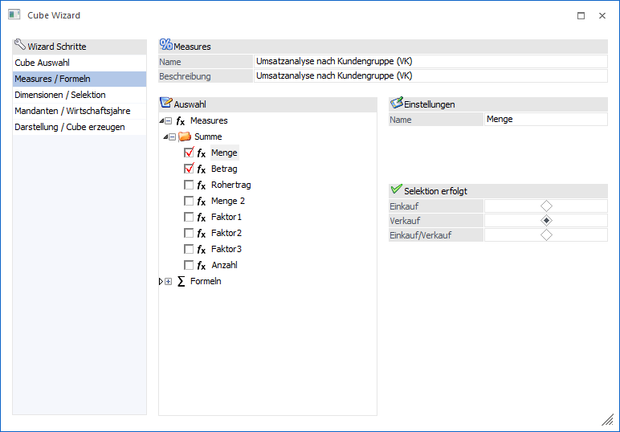
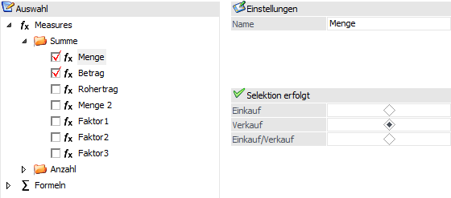
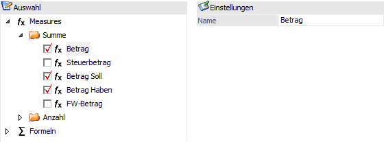
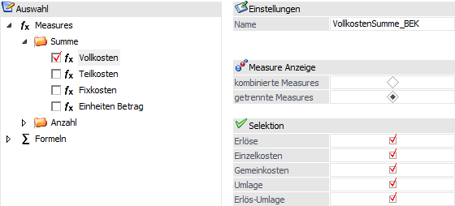
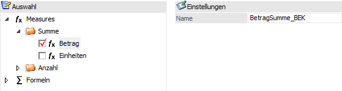
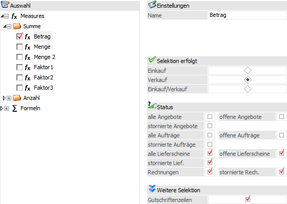
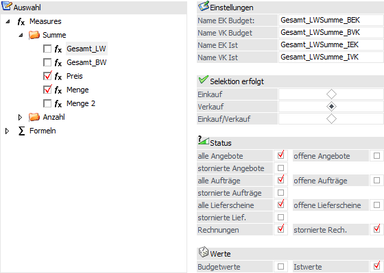
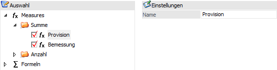
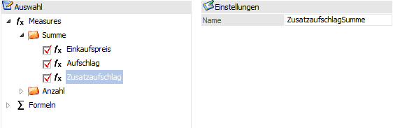
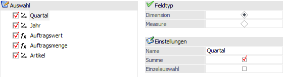

Die Measures identifizieren die numerischen Werte aus der "Facts-Tabelle", die zur Auswertung addiert werden. Fakten (Facts) sind dabei Werte, die nach verschiedenen Dimensionen ausgewertet werden können und in der Regel durch Zahlenwerte ausgedrückt werden.
Durch Aktivieren der gewünschten Einträge kann bestimmt werden, welche Werte für den Datenwürfel aufbereitet und später auch optional angezeigt werden sollen.
Hinweis
Die maximale Anzahl von Measures beträgt 68.

Für die verschiedenen Cube-Typen stehen verschiedene "Werte" (Measures) zur Verfügung, wobei sich die Auswahl in folgende Bereiche unterteilen:
ü Summe => liefert die Summe innerhalb der Argumentliste
ü Anzahl => gibt an, wie viele Inhalte (die Anzahl der Einträge) die Liste von Argumenten enthält
Hinweis
Wenn in der Cube-Definition eine Anzahl hinterlegt ist, wird diese bei einer Ausgabe nach Excel Pivot nicht mit übergeben (Funktion wird von Excel nicht unterstützt).
Ø Name
An dieser Stelle kann die Bezeichnung des Wertes frei definiert werden, so wie er später in dem Cube zu sehen sein soll.
Hinweis
Bei "DB Auswertungen" wird der Name der Measure per SQL-Statement definiert.
Verkaufsanalyse

Wird die Verkaufsanalyse gewählt, so stehen als Measures die Menge, der Betrag, der Rohertrag, die Menge2 und die Faktoren 1 bis 3 zur Verfügung.
Zusätzlich kann festgelegt werden, ob die Werte nur aus dem Einkauf, nur aus dem Verkauf oder aus beiden Bereichen herangezogen werden sollen.
Finanzanalyse

Bei der Finanzanalyse stehen die Werte für den Betrag (auch unterteilt nach Soll und Haben), sowie des Steuerbetrages zur Verfügung.
Kostenrechnungsanalyse

Bei Verwendung der Kostenrechnungsanalyse stehen die Werte der Vollkosten, der Teilkosten, der Fixkosten, sowie die Einheiten Betrag zur Verfügung.
Bei den Kosten kann dabei eingestellt werden, ob die Werte kombiniert oder getrennt ausgewiesen werden sollen. Wenn die Option "getrennte Measures" ausgewählt wird, dann kann im Bereich "Selektion" ausgewählt werden, welche Kostentypen berücksichtigt werden sollen (z.B. nur Erlöse und Einzelkosten, nicht aber Gemeinkosten). Die Variante der getrennten Measures hat ebenfalls den Vorteil, dass mit diesen Werten in weiterer Folge in Formeln gerechnet werden können.
Bei der Measure "Einheiten Betrag" hingegen kann gewählt werden, welche Einheit bei der Cube-Erstellung / -Aktualisierung herangezogen werden soll.
Kostenrechnungs Budgetanalyse

Bei der Kostenrechnungs Budgetanalyse stehen die Werte Betrag und Einheit auf Grundlage des Budgets und auf Grundlage der Ist-Werte zur Verfügung.
Beleganalyse

Wird die Beleganalyse gewählt, so stehen als Measures der Betrag, die Menge, die Menge2 und die Faktoren 1 bis 3 zur Verfügung.
Zusätzlich kann festgelegt werden, ob die Werte nur aus dem Einkauf, nur aus dem Verkauf oder aus beiden Bereichen herangezogen werden sollen.
Des Weiteren kann gewählt werden, welche Belegstufen ausgewertet werden sollen. Innerhalb der Belegstufen "Angebot, "Aufträge" und "Lieferscheine" kann hierbei definiert werden, ob "alle", nur "offene", nur "stornierte" Belege für die Auswertung herangezogen werden sollen. Für die Belegstufe "Faktura" gibt es die Möglichkeit eben diese auszuwerten und / oder auch die stornierten Rechnungen auszugeben.
Zusätzlich kann über die Option "Gutschriftenzeilen" bestimmt werden, ob diese ebenfalls berücksichtigt werden sollen.
Projektanalyse

Wird die Projektanalyse gewählt, so sehen die Measures Gesamt_LW (Gesamt in Landeswährung), Gesamt_BW (Gesamt in Belegwährung), Preis, Menge und Menge2 zur Verfügung.
Zusätzlich kann festgelegt werden, ob die Werte nur aus dem Einkauf, nur aus dem Verkauf oder aus beiden Bereichen herangezogen werden sollen.
Des Weiteren kann gewählt werden, welche Belegstufen ausgewertet werden sollen. Innerhalb der Belegstufen "Angebot, "Aufträge" und "Lieferscheine" kann hierbei definiert werden, ob "alle", nur "offene", nur "stornierte" Belege für die Auswertung herangezogen werden sollen. Für die Belegstufe "Faktura" gibt es die Möglichkeit eben diese auszuwerten und / oder auch die stornierten Rechnungen auszugeben.
Bei der Projektanalyse können auch die Budgetwerte und die Istwerte aus den Projekten zusätzlich berücksichtigt werden.
Vertreteranalyse

Bei der Vertreteranalyse kann die Provision, sowie die Bemessung ausgewählt werden.
Excel

Bei Excel stehen Felder mit Zahlenwerten als Measure zur Verfügung.
DB Auswertungen

Bei DB Auswertungen werden alle im SQL-Statement selektierten Spalten aufgeführt. Hierbei wird aufgrund des Inhalts (Zahlenwerte oder Text) der Feldtyp (Dimension oder Measure) automatisch eingestellt, kann aber nach Wunsch umgestellt werden.
Zusätzlich kann bei Dimensionen der Name frei definiert werden, so wie er später im Cube zu sehen sein soll. Ebenfalls ist es bei diesem Feldtyp möglich zu hinterlegen, ob automatisch eine Summe gebildet werden soll oder ob eine Einzelauswahl erfolgen soll.